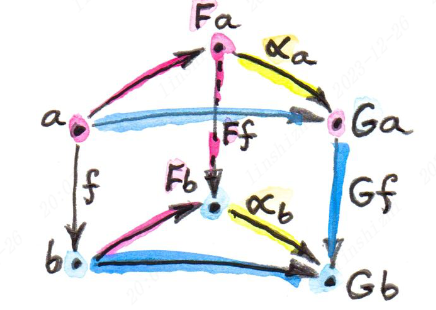
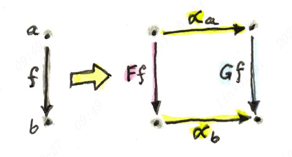

Natural Transformations
Table of Contents
Functor are mapping between Categories that preserving their structure. This document introduct a thing which is name Natural Transformation, it’s mapping between functors that preserving their natural.
1. Natural Transformations
Suppose there is Object \(a \in C\) where \(C \in \mathbf{Cat}\), and Functor \(F: C \rightarrow D\) and \(G: C \rightarrow D\). \(\alpha_{a}: Fa \rightarrow Ga\) is morphism in D. Then we call the natural transformation \(\alpha\), this tmorphism is called the component of \(\alpha\) at \(a\), or \(\alpha_{a}\).
Next we need to deal with morphisms, mapping of morphisms like following diagram:

There are two ways of getting from \(Fa\) to \(Gb\). To make sure that they are equal, we must impose the naturality condition that holds for any \(f\):
\(Gf \circ \alpha_{a} = \alpha_{b} \circ Ff\)
Another ways to thinking about natural transformation are:
- Mapping from objects to morphisms, for example \(\alpha_{a}: a \rightarrow (Fa \rightarrow Ga)\)
- Mapping morphisms to commuting squares

Finally, natural transformation may be used to define isomorphisms of functors. Saying that two functors are naturally isomorphic is almost like saying they are the same.
If \(\alpha_a\) is isomorphism then \(\alpha_a\) is said to be natural isomorphism. Two functors are called naturally isomorphic or isomorphic if \(\alpha_a\) from one to another is natural isomorphism.
2. Polymorphic Functions
- Parametric polymorphism: one formula must work across all types.
- Ad hoc polymorphism: doesn’t have to be well-defined for all types.